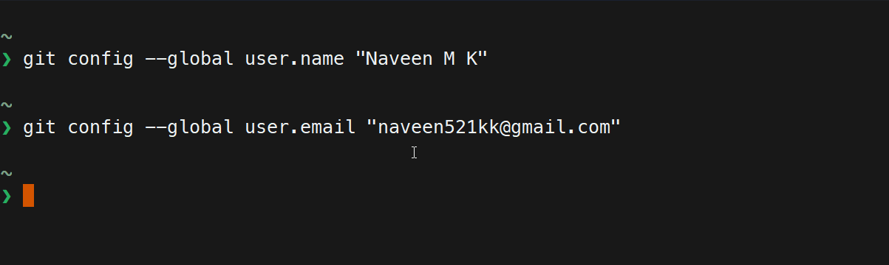
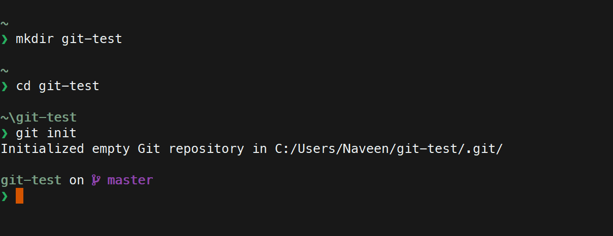

Git is a distributed version control system that allows you to track changes to files and collaborate with others.
A version control system is a tool that allows you to track changes to files and collaborate with others.
Git is available on most operating systems. You can download it from git-scm.com/downloads.
You can also install it using a package manager, if you are using one. For example, on Ubuntu:
sudo apt install git
You can check if git is installed by running the following command in your terminal:
git --version
Git needs to know who you are before you can start using it. You can configure your name and email address using the following commands:
$ git config --global user.name "Your Name"
$ git config --global user.email "your@email.com"

A Git repository is a container for a project that is tracked by Git. Treat it like a folder that contains all the files for your project and a hidden folder that contains all the information about the project.
There are two types of repositories:
Some of the basic linux commands that you will need to know to use:
$ pwd
$ ls
$ cd
$ mkdir
$ mv
You can create a new repository by running the following command in your terminal:
$ git init

To check the changes that you have made to your files, and the overall changes to your repository, you can run the following command:
$ git status
$ git diff
To stage changes to your files, you can run the following command:
$ git add <file-name>
You can make a checkpoint of your stagged changes by commmitng them. You can do this by running the following command:
$ git commit -m "commit message"
You can view the history of your repository by running the following command:
$ git log
It will show you the commit history of your repository.
You can remove a file from the staging area by running the following command:
$ git reset <file-name>
You can use the commit hash to undo a commit
$ git revert <commit-hash>
When you want to switch to a different branch, but you have some changes that you don't want to commit, you can stash them.
$ git stash
$ git stash list
You can get back the changes that you stashed by running the following command:
$ git stash pop
You can download the GitHub Desktop Client from desktop.github.com.
You can a remote repository in your github account and push your local repository to it after you have made some commits.
$ git remote add origin <repository-url>
$ git push -u origin main
You can pull changes from a remote repository by running the following command:
$ git pull origin main
Branches are used to work on different versions of a repository at the same time. The default branch is called the main branch.
You can create a new branch by running the following command:
$ git branch <branch-name>
You may not always be starting a project from scratch. You may want to work on an existing project. You can do this by cloning the repository.
$ git clone <repository-url>
There are a lot of things that we didn't cover in this workshop. Here are some of the things that you can learn next:
$ git merge
$ git rebase
$ git cherry-pick
$ git reflog